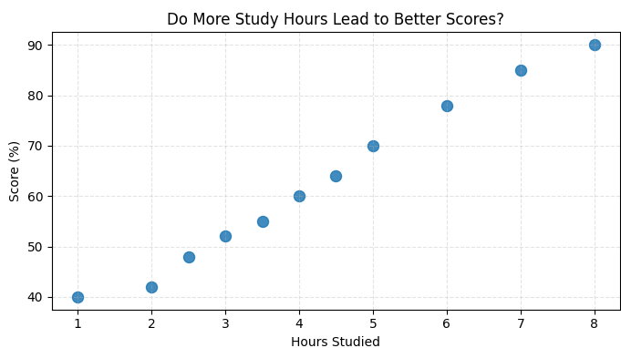

Scatter Plot in Python with Matplotlib – Tutorial and Mini Project
A scatter plot is your quick “does X relate to Y?” detector. Each dot is one data point, plotted by two values (like hours studied vs exam score). If the dots form a pattern (slanting up, clustering, curving), there’s a story worth exploring.
When should you use a scatter plot?
- You have two numeric variables and want to check if they move together.
- You suspect a trend, cluster, or outliers (the oddballs) in your data.
- You want to compare groups by color/shape without making 3 different charts.
Real-Life Examples of Histograms
- Study habits: Hours studied vs exam score — does more time actually help?
- Fitness: Daily steps vs sleep duration — do active days sleep better?
- Apps: Session length vs in-app purchases — where’s the sweet spot?
- Business: Ad spend vs conversions — are you spending smart or just spending?
Quick Start: Your first scatter plot
Let’s plot hours studied vs scores.
import matplotlib.pyplot as plt
import numpy as np
# Sample data
hours = [1, 2, 2.5, 3, 3.5, 4, 4.5, 5, 6, 7, 8]
scores = [40, 42, 48, 52, 55, 60, 64, 70, 78, 85, 90]
plt.figure(figsize=(7,4))
# Scatter plot
plt.scatter(hours, scores, s=75, alpha=0.85)
# Labels & title
plt.title("Do More Study Hours Lead to Better Scores?")
plt.xlabel("Hours Studied")
plt.ylabel("Score (%)")
plt.grid(True, linestyle="--", alpha=0.35)
plt.tight_layout()
plt.show()
Explanation
plt.scatter()creates the scatter plot.- hours → x-axis values (study hours).
- scores → y-axis values (exam scores).
s=75sets the size of each point.alpha=0.85controls point transparency.plt.grid()adds dashed grid lines for better readability.
Output of the above code :

Make it pop: easy customizations
- Color by category: Use different colors for groups (e.g., class A vs B).
- Size encodes a third variable: Pass a list to
s=[...](e.g., study breaks taken). - Transparency:
alpha=0.5helps when many points overlap. - Markers: Try
marker='x','^', or's'for different vibes. - Annotations: Highlight outliers with
plt.annotate().
Mini Project: Weekly Temperature Tracker
In this mini project, we’ll track the daily temperature for a week using a Python list and then plot it visually with Matplotlib. The twist? We’ll automatically find the hottest day of the week and highlight it in a different color on the chart.
This project will help you practice:
- Storing and managing data in Python lists
- Finding the maximum value and its index
- Customizing scatter plots with different colors and sizes
- Adding labels, titles, and legends in Matplotlib
Challenge: Try modifying the project so that it highlights both the hottest and coldest days with different colors, and experiment with more than one week of data.
Hint: You’ll need to use max(), min(), list indexing, and multiple plt.scatter() calls.
More educational content :